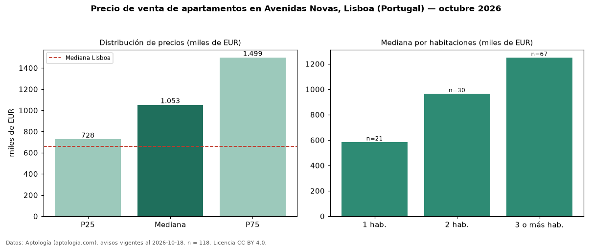

Precio de venta de apartamentos en Avenidas Novas, Lisboa (Portugal) — octubre 2026
EUR 1,05 millones es el precio mediano de apartamentos en venta en Avenidas Novas, Lisboa (Portugal) (n = 118 avisos). Eso es 59 % por encima de la mediana de Lisboa para apartamentos (EUR 660.000). Por metro cuadrado, la mediana es EUR 8.950/m² (n = 116 avisos con área), 20 % por encima de Lisboa (EUR 7.458/m²). Por precio mediano es el puesto 2 de 20 zonas de Lisboa con al menos 30 avisos de apartamentos en venta (EUR): entre las más caras. Con el precio por m² de alquiler del mismo segmento (EUR 26,52/m² al mes), la rentabilidad bruta implícita es 3,6 % anual (aproximación con medianas de ofertas distintas). El área mediana anunciada es 120 m². El segmento con más oferta es el de 3 o más habitaciones (67 avisos, mediana EUR 1,25 millones); pasar de 1 habitación a 3 o más habitaciones cambia la mediana +114 %. La mitad central de los avisos va de EUR 727.500 a EUR 1,50 millones (razón 2,1), una dispersión alta. Datos: Aptología (aptologia.com), CC BY 4.0 — https://www.aptologia.com/pt/venda/lisboa/avenidas-novas. Archivos: PDF, CSV con las cifras y gráfica PNG.

| Avisos únicos | 118 |
|---|---|
| Percentil 25 | COP 727.500 |
| Mediana | COP 1.052.520 |
| Percentil 75 | COP 1.498.750 |
| Mediana por m² | COP 8.950 |
Fuente: avisos vigentes de portales inmobiliarios recopilados por Aptología, deduplicados (mínimo 30 avisos únicos por celda). Precios pedidos, no cerrados. Fecha: 2026-10-18.